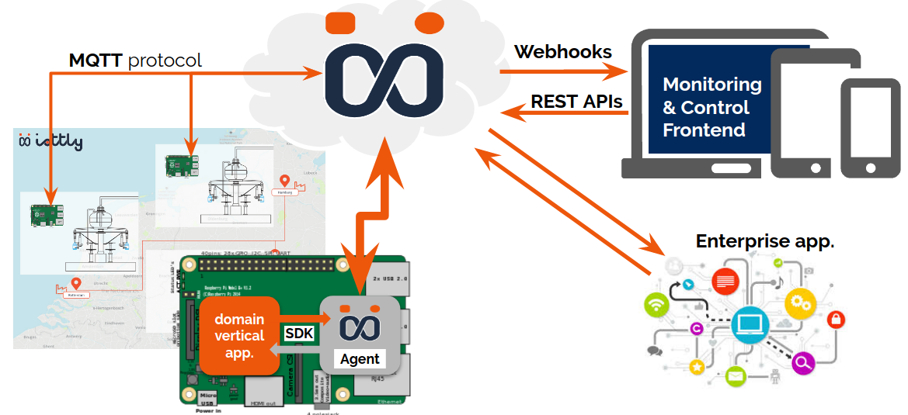
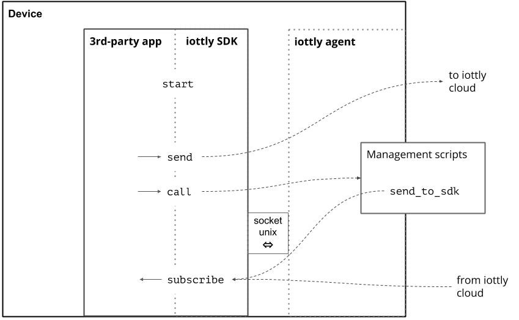

Python SDK iottly¶
Python module handling interaction with the iottly agent from third-party applications installed locally on the device.
For example the custom application takes care of the interactions with the low level hardware and buses, while delegating to the iottly Agent the secure communication over MQTT.
Moreover the custom application can invoke python scripts registered in the Agent to perform tasks like complex event detection and correlations. This is like “functions as a service on embedded devices”, and turns out to be particularly useful if the rules must be updated frequently or different versions of the rules must be maintained for devices in different installations.
Briefly, the registered app can:
Send messages to iottly
Subscribe to specifics commands received from the iottly-agent
Call a Python snippet in the user-defined scripts of the attached Agent
Register callbacks on specifics iottly-agent notification
How it works:
Example snippet:
import time
from iottly_sdk import IottlySDK
# Define callback to receive notifications
# about the iottly agent status:
# - started
# - stopping
# - stopped
def on_agent_status_changed(status):
print('on_agent_status_changed: {}'.format(status))
# Define callback to receive notifications
# about the iottly agent mqtt connection status:
# - connected
# - disconnected
def on_connection_status_changed(status):
print('on_connection_status_changed: {}'.format(status))
# Create an instance of IottlySDK with:
# - a "name" to identify your application (this will appear
# in the dashboard logs)
# - the optional number of messages retained if agent is
# down (defaults to 10)
# - the previously defined callbacks (optional) to receive
# agent status notifications
iottlysdk = IottlySDK(
name='myfirstiottlyapp',
max_buffered_msgs=100,
on_agent_status_changed=on_agent_status_changed,
on_connection_status_changed=on_connection_status_changed)
# Define one callback for each incoming commands you want to
# subscribe to. Commands are defined in the iottly
# dashboard / management commands panel.
def on_echo_received(cmdpars):
print('on_echo_received: {}'.format(cmdpars))
def on_examplecommand_received(cmdpars):
print('on_examplecommand_received: {}'.format(cmdpars))
# Subscribe commands of interest and associate a callback
iottlysdk.subscribe(
cmd_type='echo',
callback=on_echo_received
)
iottlysdk.subscribe(
cmd_type='examplecommand',
callback=on_examplecommand_received
)
# Start the sdk loops
iottlysdk.start()
# Here follows the main blocking loop of your application.
# It "reads a temperature" and send it to iottly using
# the 'send' method.
while True:
try:
s = input(
'\n^C to exit, "m" to send 1 message, '
'"l" to send 20 messages:\n'
)
if s == 'm':
t = {'temperature': 22}
# send a message to iottly
iottlysdk.send(t)
if s == 'l':
for t in range(10, 30):
t = {'temperature': t}
# send a message to iottly
iottlysdk.send(t)
time.sleep(1)
except KeyboardInterrupt:
break
Table of Contents